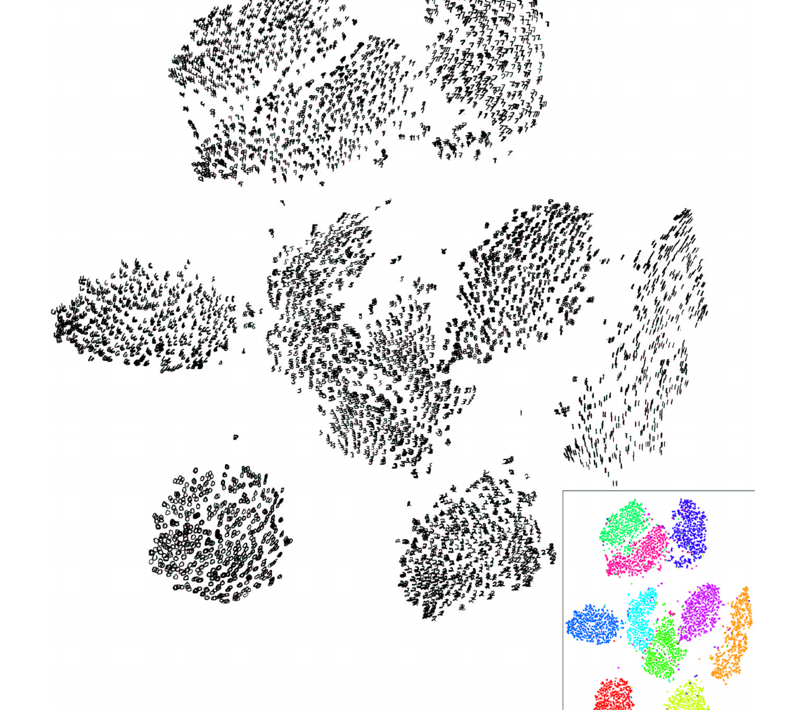

On this page
Neighbors first.
What if your data is a Swiss roll? No flat shadow, no viewing angle, no rotation ever shows it unrolled. Every linear projection crushes it into mush. I hit this wall looking at real embeddings: PCA showed one big smear where I knew there were ten clean digit clusters. PCA asks: which 2D shadow loses the least? t-SNE asks a better question: which 2D arrangement keeps the right neighbors together? Same data, totally different question, and the answer became the most famous visualization in machine learning.
t-SNE never projects anything. It does something sneakier. First, for every point in high dimensions, write down who its neighbors are, as probabilities: point $i$ looks at every other point $j$ and assigns a neighbor probability that decays with distance. Second, scatter all the points onto a 2D canvas at random. Third, compute the same neighbor probabilities down in 2D, and shuffle the points around until the 2D probabilities match the high-D ones. The shuffling is plain gradient descent on a KL divergence. The neighbors are the contract; everything else is negotiable.
Two things make it work where older methods failed. First, every point gets its own neighborhood width, tuned so each point has about perplexity effective neighbors. Dense regions get tight kernels, sparse regions get wide ones. Second, the 2D side uses a heavy-tailed Student-t distribution instead of a Gaussian. That is the famous trick, and it fixes the crowding problem: in 2D there is not enough room to honor every medium-range distance honestly, so the t-distribution gives up on far distances gracefully and spends all its effort keeping neighbors together.
Picture every point grabbing the hands of its closest neighbors, then everyone shuffles around a dance floor until nobody is holding a stranger's hand. The t-distribution is the bouncer: it stops caring who stands far away and only breaks up the wrong hand-holds.
The setup: $n$ points. $x_i$ lives in $D$ dimensions (in the tool below, $D$ is 24). $y_i$ is the same point's 2D position, the thing we optimize. $||.||^2$ is squared Euclidean distance.
Read it aloud: "p of j given i equals e to the minus squared distance between $x_i$ and $x_j$, over two sigma-i squared, divided by the same thing summed over every other point $k$." Term by term: $x_i$ and $x_j$ are points in the original high-D space; $\sigma_i$ is point $i$'s private kernel width; the numerator decays exponentially so far points get nearly zero; the denominator just makes the probabilities sum to 1 over $j$. Note this is a conditional distribution: rows sum to 1, columns do not.
Real numbers. Three points at distances 1, 2, 3 from $i$, with $\sigma_i = 1$. Numerators: $\exp(-1/2) = 0.6065$, $\exp(-4/2) = 0.1353$, $\exp(-9/2) = 0.0111$. Sum: $0.7530$. Normalized: $p = 0.8055$, $0.1797$, $0.0148$. The nearest point eats 80 percent of the probability. The one at distance 3 gets under 2 percent. Distance is destiny.
Read it aloud: "perplexity of point $i$'s distribution is two to the power of its Shannon entropy in bits." Term by term: $H$ is the entropy, the effective number of neighbors; $\sigma_i$ is found by binary search until the entropy matches the log of the target perplexity. Perplexity 30 means: tune $\sigma_i$ until each point behaves as if it has about 30 neighbors.
Real numbers. Take the distribution from step 1: $p = (0.8055, 0.1797, 0.0148)$. Its entropy works out to $0.786$ bits:
$$H = -(0.8055 \log_2 0.8055 + 0.1797 \log_2 0.1797 + 0.0148 \log_2 0.0148) = 0.786$$So its perplexity is $2^{0.786} = 1.72$. It behaves as if it has about 1.7 neighbors. Makes sense: one neighbor ate 80 percent.
Then symmetrize, because a one-sided friendship is not a neighborhood: $p_{ij} = (p_{j|i} + p_{i|j}) / 2n$. Average both directions and divide by twice $n$, so the whole thing sums to 1.
Read it aloud: "q_ij equals one over one plus the squared 2D distance, normalized over all pairs. That is a Student-t with one degree of freedom, also called a Cauchy." Term by term: $y_i$ are the 2D positions we are optimizing; the numerator is the heavy tail; the denominator normalizes over all ordered pairs.
Real numbers. At 2D distance 1, the unnormalized $q$ is $1/(1+1) = 0.5$. At distance 5, it is $1/26 = 0.0385$. Now compare the Gaussian from step 1 at distance 5 with $\sigma = 1$: $\exp(-25/2) = 0.0000037$. The t-distribution gives that far pair $0.0385$ instead of $0.0000037$: about 10,000 times more probability. Distant points are allowed to be vaguely distant. That forgiveness is what gives clusters room to separate instead of piling up in the middle. This is the fix for the crowding problem.
Read it aloud: "the cost is the sum over all pairs of p_ij times log of p_ij over q_ij. That is the KL divergence of the map $Q$ from the high-D truth $P$." Term by term: $p_{ij}$ is the true high-D neighbor probability, fixed; $q_{ij}$ is the map's version, which depends on $y$; the log ratio is zero when they match and positive when they disagree. You pay the most for pairs that were close in high-D, because $p_{ij}$ weights the bill. Far pairs barely matter. That asymmetry is the entire philosophy: preserve neighborhoods, sacrifice the rest.
Read it aloud: "the gradient on point $i$ is four times the sum over $j$ of (p_ij minus q_ij) times the vector from $j$ to $i$, times one over one plus squared distance. We run gradient descent, so each point steps DOWN this gradient, which flips every sign into a force." Term by term: $(p_{ij} - q_{ij})$ is the mismatch; where $p_{ij}$ beats $q_{ij}$ the map is underestimating a true neighborhood, and stepping down the gradient pulls point $i$ toward $j$; where $q_{ij}$ wins the map has overcrowded the pair, and they push apart. $(y_i - y_j)$ is the direction; the trailing $(1 + ||.||^2)^{-1}$ softens the force with distance. Springs and anti-springs. True neighbors attract; everyone else mildly repels until the crowding eases. When every spring is balanced, you have your map.
Hand-checked on three points, independent of the tool below. Positions $Y = [(0,0), (1,0), (0,2)]$ and joint probabilities
$$P = [[0, 0.30, 0.15], [0.30, 0, 0.05], [0.15, 0.05, 0]]$$The 2D normalizer is $Z = 1.733333$, giving $Q_{01} = 0.288462$, $Q_{02} = 0.115385$, $Q_{12} = 0.096154$. The gradients come out to $g_0 = (-0.023077, -0.055385)$, $g_1 = (-0.007692, 0.061538)$, $g_2 = (0.030769, -0.006154)$. They sum to zero, as they must: shifting every point the same way changes nothing.
One honest note first: the source notebook for this page, dim-reduce/tsne.ipynb, is an empty shell. One empty code cell, no outputs. So this tool does not replay notebook output. It runs the canonical t-SNE example live, in your browser: 300 points in 24 dimensions, grouped into 4 clusters, each hiding 3 sub-clusters.
The tool computes real t-SNE: the exact $P$ matrix by binary search on each point's $\sigma_i$, symmetrized joint probabilities, a random start, and momentum gradient descent on the KL cost. No libraries, all vanilla JS. The canvas uses a fixed scale, so a map that collapses looks collapsed and a map that explodes looks exploded. Nothing is auto-zoomed to flatter the result.
How to play
t-SNE maps are gorgeous and liars in equal measure. Five things I wish someone had told me before I trusted my first one.
Laurens van der Maaten and Geoffrey Hinton. "Visualizing Data using t-SNE." Journal of Machine Learning Research 9 (2008): 2579-2605. jmlr.org/papers/v9/vandermaaten08a.html
This is the paper's flagship result: 6,000 MNIST digits, each one 784 pixels, laid out by t-SNE. Hover or tap a cluster to see which digits live there. Rebuilt from Figure 7 of van der Maaten & Hinton (2008).

PCA is the linear answer; t-SNE is the nonlinear answer; UMAP is the fast answer. The pattern to keep: whenever a method promises a 2D map of high-D data, ask what it preserves and what it sacrifices. PCA preserves variance and sacrifices nothing it can measure linearly. t-SNE preserves neighborhoods and sacrifices global distances. Nothing preserves everything: a 24-dimensional cloud does not fit on a dance floor without somebody stepping on somebody's toes.